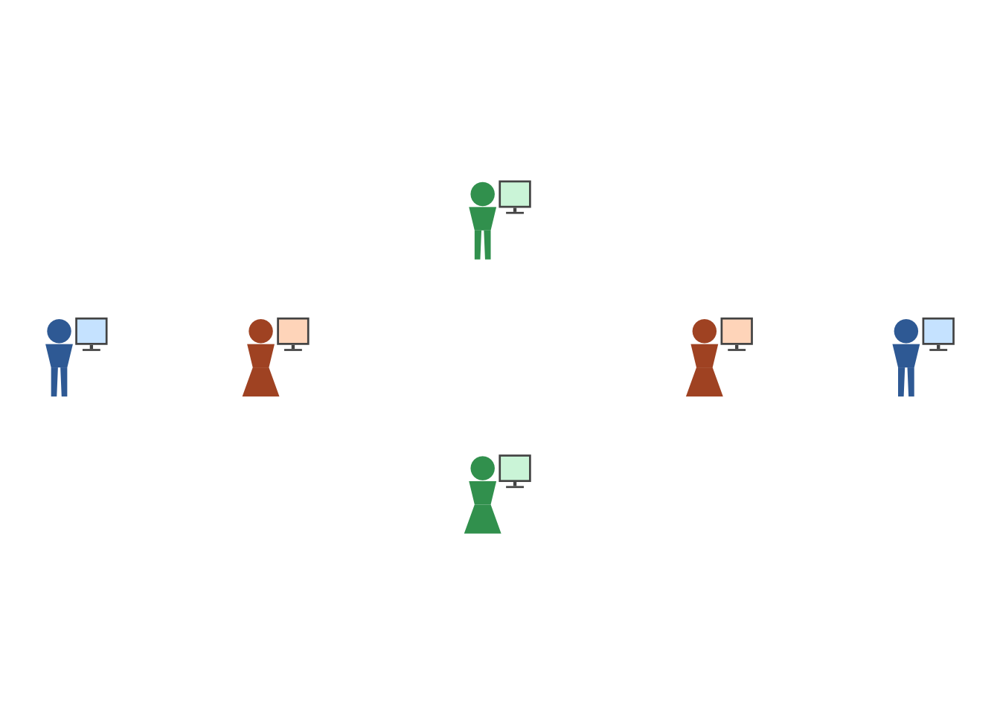
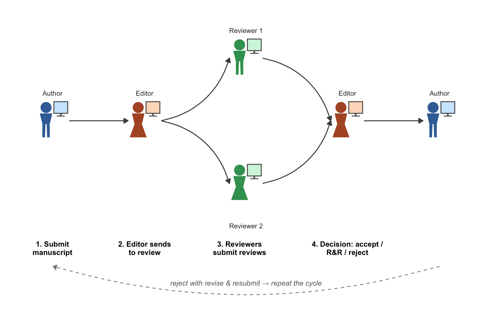

source("person-grid.R")
source("testing-sequence.R")
source("peer-review-workflow.R")peer-review-workflow.R: the peer-review cycle as a flow diagram
Walkthrough: how the script works, and how to use it in Quarto
Aims
peer-review-workflow.R draws a single, fixed diagram of the peer-reviewed publication cycle — author submits to editor, editor sends out to two reviewers (fan-out), reviewers report back (fan-in), editor decides, with a dashed loop-back arrow for “reject with revise & resubmit → repeat”. It reuses the “person at a computer” icon from testing-sequence.R across four roles (author, editor, reviewer ×2) rather than drawing a new icon style, so the peer-review figure visually matches the testing-sequence figures elsewhere in the deck.
Unlike the other four scripts in this set, this one is not parametrized for general reuse — it’s a single bespoke diagram, built with hand-placed coordinates for this specific six-icon layout. This document explains that layout logic so it can be adapted (e.g. a different number of reviewers) rather than treated as a black box.
After working through it, you should be able to:
- explain how the diagram’s icons, arrows, and labels are each built from the same hand-placed
poscoordinates; - trace how arrow endpoints are anchored just outside icons, not at their centres, and why that matters;
- adapt the diagram for a different number of roles or reviewers.
Prerequisites / assumptions
- Packages:
ggplot2only. - Sourcing:
person-grid.Randtesting-sequence.Rmust both be sourced first, in that order — this script callsperson_at_computer()directly, which itself depends onperson_parts()/monitor_parts(). - Reader background: read person-grid-walkthrough.qmd and testing-sequence-walkthrough.qmd first — this script is a thin, specific application of both.
How it works: the process
flowchart TB
A["pos: named list of\nhand-placed (x, y) coordinates\nfor each of the 6 icons"] --> B["icon_df() / icon helper\nbuilds each icon via\nperson_at_computer(), tags it,\ncolours it by role"]
A --> C["right_of() / left_of()\ncompute arrow endpoints\njust outside each icon,\nnot at icon centres"]
C --> D["straight_arrows, curve_arrows,\nloop_arrow: data frames of\narrow endpoints"]
B --> E["single ggplot():\nicons + segments + curves\n+ role/step text labels"]
D --> E
The diagram is built from three largely independent ingredients that only come together in the final ggplot() call: where each icon sits (pos), what each icon looks like (role-specific colour via person_at_computer()), and how the icons connect (arrows computed from positions, not drawn freehand).
Element-by-element walkthrough
Layout: the pos list and role colours
researcher_col <- list(person = "#3B6EA5", screen = "#CFE8FF")
editor_col <- list(person = "#B0562D", screen = "#FFDCC5")
reviewer_col <- list(person = "#3B9E5F", screen = "#D3F5DF")
pos <- list(
researcher1 = c(0, 0),
editor1 = c(5.0, 0),
reviewerA = c(10.5, 3.4),
reviewerB = c(10.5, -3.4),
editor2 = c(16.0, 0),
researcher2 = c(21.0, 0)
)Every coordinate here is hand-chosen, not computed from a formula (unlike person-grid.R’s automatic grid spacing). The author and editor appear twice (researcher1/researcher2, editor1/editor2) at different x-positions, because the same two people appear at both the start and end of the cycle — this is a flow diagram of a process, not a single snapshot of who’s present. The two reviewers are offset vertically (+3.4/-3.4) at the same x-position, to draw the fan-out/fan-in visually as a split-and-rejoin. Each role gets its own person/screen colour pair, reused across every icon that plays that role.
Building each icon: the icon_df() helper
icon_df <- function(name, kind, cols) {
p <- pos[[name]]
d <- person_at_computer(kind = kind, ox = p[1], oy = p[2],
person_color = cols$person, screen_color = cols$screen)
d$icon <- name
d
}
icons <- rbind(
icon_df("researcher1", "A", researcher_col),
icon_df("editor1", "B", editor_col),
icon_df("reviewerA", "A", reviewer_col),
icon_df("reviewerB", "B", reviewer_col),
icon_df("editor2", "B", editor_col),
icon_df("researcher2", "A", researcher_col)
)
icons$poly_id <- paste(icons$icon, icons$part, icons$role)This is a direct application of person_at_computer() (from testing-sequence.R) at each named position, looked up from pos. The kind argument ("A"/"B") here is just varying the leg silhouette for visual variety across the six icons — it carries no role meaning (unlike person_color/screen_color, which does encode role). As with every other script in this set, poly_id is rebuilt to be unique per icon and per sub-part, so ggplot’s group aesthetic doesn’t connect polygons that happen to share a part name (e.g. every icon’s "head") across different icons.
researcher_col <- list(person = "#3B6EA5", screen = "#CFE8FF")
editor_col <- list(person = "#B0562D", screen = "#FFDCC5")
reviewer_col <- list(person = "#3B9E5F", screen = "#D3F5DF")
pos <- list(
researcher1 = c(0, 0), editor1 = c(5.0, 0),
reviewerA = c(10.5, 3.4), reviewerB = c(10.5, -3.4),
editor2 = c(16.0, 0), researcher2 = c(21.0, 0)
)
icon_df <- function(name, kind, cols) {
p <- pos[[name]]
d <- person_at_computer(kind = kind, ox = p[1], oy = p[2],
person_color = cols$person, screen_color = cols$screen)
d$icon <- name
d
}
demo_icons <- rbind(
icon_df("researcher1", "A", researcher_col),
icon_df("editor1", "B", editor_col),
icon_df("reviewerA", "A", reviewer_col),
icon_df("reviewerB", "B", reviewer_col),
icon_df("editor2", "B", editor_col),
icon_df("researcher2", "A", researcher_col)
)
demo_icons$poly_id <- paste(demo_icons$icon, demo_icons$part, demo_icons$role)
ggplot(demo_icons, aes(x, y, group = poly_id, fill = fill)) +
geom_polygon() +
scale_fill_identity() +
coord_equal() +
theme_void()
Arrows: right_of()/left_of() and three arrow data frames
right_of <- function(name, dy = 0.9) c(pos[[name]][1] + 1.25, pos[[name]][2] + dy)
left_of <- function(name, dy = 0.9) c(pos[[name]][1] - 0.55, pos[[name]][2] + dy)
NoteWhy not anchor arrows at icon centres?
Arrows are anchored just outside each icon (+1.25/-0.55 from the icon’s x-position, with a small +0.9 vertical nudge) rather than at icon centres — centring the arrows would draw them straight through the icon polygons instead of visibly connecting two separate shapes.
Three kinds of connections are built from these anchors — the fan-out/fan-in pair is the most distinctive, since its curvature sign is chosen deliberately rather than left at a single default:
curve_arrows <- data.frame(rbind(
c(right_of("editor1")[1], right_of("editor1")[2], left_of("reviewerA")[1], left_of("reviewerA")[2], 0.30),
c(right_of("editor1")[1], right_of("editor1")[2], left_of("reviewerB")[1], left_of("reviewerB")[2], -0.30),
c(right_of("reviewerA")[1], right_of("reviewerA")[2], left_of("editor2")[1], left_of("editor2")[2], -0.30),
c(right_of("reviewerB")[1], right_of("reviewerB")[2], left_of("editor2")[1], left_of("editor2")[2], 0.30)
))
names(curve_arrows) <- c("x", "y", "xend", "yend", "curvature")straight_arrows— plaingeom_segment()arrows: author → editor, and editor → author (submission and final decision).curve_arrows(shown above) —geom_curve()arrows with an explicitcurvaturevalue per row (+0.30or-0.30) for the fan-out (editor → two reviewers) and fan-in (two reviewers → editor) — the sign ofcurvatureis mirrored to match each reviewer’s vertical offset, so the four curves bow outward symmetrically rather than crossing.loop_arrow— a single dashedgeom_curve()well below the main row (y = -7.0), representing “reject, revise & resubmit” looping back from the end to the start.
Text labels and final assembly
Two more data frames (step_captions, role_labels) place bold numbered step captions (e.g. “1. Submit manuscript”) and small role labels (“Author”, “Editor”, “Reviewer 1”/“2”) at further hand-offset positions.
NoteHand-tuned, not computed
A code comment in the script flags that Reviewer 1’s label needed a different vertical offset than the generic pattern, to clear its icon without crowding the step caption beneath it. That’s a reminder that this diagram’s positions were tuned by eye, so changing icon spacing or icon size will likely require re-tuning label offsets too, rather than cascading automatically.
Everything (polygons, segments, curves, loop arrow, annotation, two sets of text labels) is layered onto one ggplot() object and returned as peer_review_workflow()$plot.
peer_review_workflow()$plot
Quarto usage / integration
Setup-chunk lines (order matters: both dependencies before this script):
source("person-grid.R")
source("testing-sequence.R")
source("peer-review-workflow.R")Real usage from doing-being-science.qmd:
```{r}
#| label: fig-peer-review-workflow
#| fig-cap: "The peer-reviewed publication cycle: submission, review, and decision, repeating until accept or reject"
#| fig-width: 9
#| fig-height: 6
peer_review_workflow()$plot
```peer_review_workflow() takes no arguments — there’s nothing to configure via chunk options beyond fig-width/fig-height (the plot uses coord_equal(clip = "off", ylim = c(-8.8, 5.8)) internally, so it has a fixed aspect ratio; picking a fig-width/fig-height far from roughly 9:6 will add letterboxing rather than reflowing the diagram).
If you need to adapt this diagram
Because nothing here is parametrized, adapting it (e.g. three reviewers instead of two, or a different number of decision rounds) means editing the script directly rather than passing new arguments:
- Add/remove entries in
pos(and give any new role a colour list likereviewer_col). - Add/remove the corresponding
icon_df()calls. - Add/remove rows in
curve_arrowsfor the new fan-out/fan-in connections, with signedcurvaturechosen to avoid crossing. - Re-check
role_labels/step_captionsy-offsets by eye — as noted above, these were tuned per-icon, not computed generically.
Common symptoms
| Symptom | Likely cause |
|---|---|
| Diagram looks squeezed or letterboxed | fig-width/fig-height far from the ~9:6 ratio the fixed coord_equal(clip = "off", ylim = ...) was designed for. |
| New icon added but no arrow reaches it | Forgot to add right_of()/left_of()-based rows for the new position in curve_arrows/straight_arrows. |
| New curves cross awkwardly | curvature signs not mirrored to match the new icon’s vertical offset. |
| A label overlaps its icon or a step caption | Offsets are hand-tuned per icon (see callout above) — a new/moved icon needs its own offset check, not just reuse of an existing one. |
Exercises
- Re-render
peer_review_workflow()$plotatfig-width = 6, fig-height = 6(narrower than the 9:6 the diagram was designed for). What happens, and why (hint: look at the internalcoord_equal(clip = "off", ylim = ...)call)? - Add a third reviewer: duplicate
reviewerB’s entry inposasreviewerCat a third vertical offset, add a matchingicon_df()call, and add the corresponding fan-out/fan-in rows tocurve_arrows. What else needs adjusting before it looks right? - Change
reviewer_col’spersoncolour and re-render. Which parts of the diagram change colour, and which don’t? Explain by tracing howperson_at_computer()usesperson_colorvs.screen_color. - The script notes Reviewer 1’s label offset needed manual tuning. Deliberately break it (set its
yback to the generic+1.4the code comment mentions) and re-render — confirm you can see why the fix was needed. - This script takes no arguments at all. Sketch (in words, or in code if you want to go further) what a parametrized version might look like — e.g.
peer_review_workflow(n_reviewers = 3)— and what would have to become programmatic (positions? arrows? labels?) rather than hand-placed.
See also
- testing-sequence-walkthrough.qmd — the source of the
person_at_computer()icon reused four times here. - person-grid-walkthrough.qmd — the underlying geometry/colour primitives.